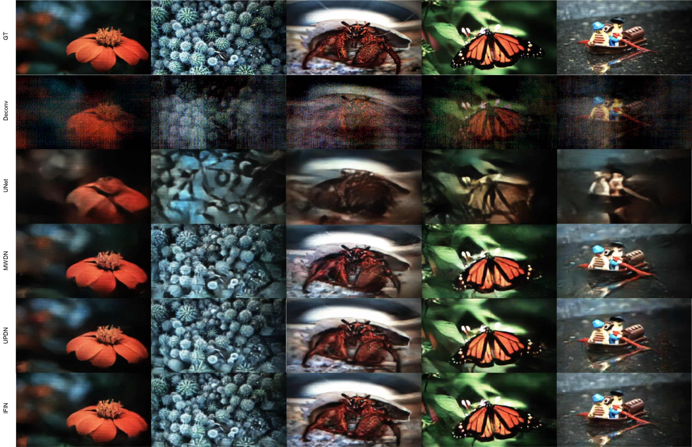

Abstract
Lensless imaging enables compact and versatile computational cameras by replacing bulky optics with thin coded elements. Reconstruction is challenging because large-footprint PSFs produce highly multiplexed observations, making inversion severely ill-conditioned and sensitive to calibration errors and model mismatch.
We propose the Integrated Forward-Inverse Network (IFIN), a physics-guided architecture that interleaves differentiable forward projections with learnable inverse updates at every stage. This bidirectional coupling supports progressive, physics-consistent refinement and permits system-constrained PSF kernel refinement under model uncertainty. On challenging lensless benchmarks, including the newly introduced WiderCam dataset, IFIN achieves state-of-the-art reconstruction quality.
Method
IFIN maintains coupled measurement-domain and image-domain streams. At each scale, an Integrated Forward-Inverse Block exchanges information through a Forward System Operator, an Inverse System Operator, and a shared learnable PSF field.


Results
| Dataset | Metric | Previous Best | IFIN |
|---|---|---|---|
| DiffuserCam | PSNR | 28.228 | 29.862 |
| DiffuserCam | LPIPS | 0.183 | 0.174 |
| DiffuserCam | SSIM | 0.878 | 0.893 |
| WiderCam | PSNR | 24.791 | 25.444 |
| WiderCam | LPIPS | 0.202 | 0.201 |
| WiderCam | SSIM | 0.810 | 0.824 |
| MultiWienerNet | PSNR | 28.504 | 31.083 |
| MultiWienerNet | LPIPS | 0.202 | 0.175 |
| MultiWienerNet | SSIM | 0.831 | 0.866 |


WiderCam Dataset
WiderCam is a wide-field lensless reconstruction benchmark captured with a compact custom phase-mask camera. It contains 25,000 paired measurements, split into 24,000 training and 1,000 test images, and highlights strong shift-variant degradation across the field of view.
Open SVLensless / WiderCam dataset page


More Results


Code
git clone https://github.com/IIL-SNU/IFIN.git
cd IFIN
python -m venv .venv
source .venv/bin/activate
pip install -r requirements.txt
python train.py --config configs/default.yamlCitation
@inproceedings{bae2026ifin,
title = {Integrated Forward-Inverse Network for Lensless Image Reconstruction},
author = {Bae, Donggeon and Jung, Jaewoo and Kang, Yong Guk and Lee, Kyung Chul and Kim, Taeyoung and Kim, Jongho and Byun, Sangjun and Park, Joonsik and Lee, Seung Ah},
booktitle = {European Conference on Computer Vision (ECCV)},
year = {2026}
}